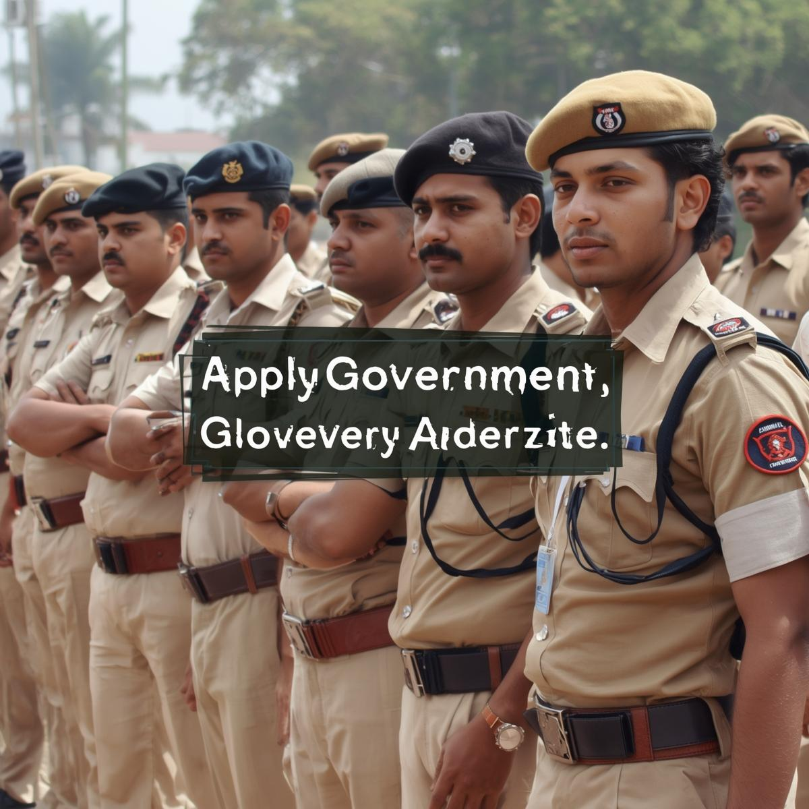

Official Notification Live
BPSC published the official notification: vacancies, eligibility, important dates and application window details.
Combined Competitive Exam — Prelims • Mains • Interview
Tap "View Details" to open full page (desktop shows full page by default).
Official notifications, admit cards, exam dates and answer keys related to BPSC CCE 2025.
BPSC published the official notification: vacancies, eligibility, important dates and application window details.

Prelims admit cards are usually released 2–3 weeks before exam. Keep login details ready.

Preliminary estimates: 1000+ vacancies across SDM, DSP, Revenue Officer and allied services. Final numbers in notification.

Posts like DSP and SDM require strong administrative knowledge — focus Mains answers on governance and law.
The Bihar Public Service Commission (BPSC) conducts the Combined Competitive Exam (CCE) to recruit state civil servants for administrative and managerial roles across Bihar. The exam tests candidates on general studies, aptitude, language, and optional subjects relevant to administration.
BPSC posts offer social impact, stable government career paths, structured promotions, and the opportunity to influence policy and governance in Bihar. Many aspirants prepare especially for state-specific topics (Bihar history, geography, culture).
Typically two papers: General Studies Paper I (GS I) and General Studies Paper II (Aptitude/CSAT) — check official notification for the exact structure. Prelims is qualifying for Mains.
Mains usually consists of 4 descriptive papers + optional/subject-specific papers for some posts. Papers demand structured, well-argued answers with facts and examples.
Interview evaluates candidate's mental alertness, clarity, balance of judgment, leadership and overall personality.
Notification indicates post-wise vacancies — approximate count: 1000+ (SDM, DSP, Revenue Officer, Block Welfare Officer etc.). For exact numbers, consult the official PDF.
Download Vacancy PDFBPSC conducts exams at multiple centres across Bihar — major cities include Patna, Gaya, Muzaffarpur, Bhagalpur, Darbhanga, and others. City intimation and centre details are provided on admit cards.
A focused 12-week plan to build syllabus coverage, speed, accuracy and answer-writing skills.
Use cutoffs to set target scores. Previous year cutoffs are indicative — final cutoffs depend on vacancies and difficulty.
| Category | 2024 | 2023 | 2022 |
|---|---|---|---|
| General (UR) | 145.2 | 139.8 | 132.0 |
| OBC | 138.6 | 131.9 | 125.4 |
| SC | 125.3 | 120.8 | 115.6 |
Q: When will BPSC CCE 2025 application window open?
A: Check the official notification PDF and the BPSC website. Application windows typically remain open for 2–3 weeks.
Q: What are best books for BPSC CCE?
A: Standard NCERTs for basics, Laxmikanth for Polity, Spectrum/Modern India for History, and state-level resources for Bihar GK. Pair books with daily current affairs and test series.
Q: How to prepare for Mains answer writing?
A: Regular practice with previous Mains questions, timed answer writing, feedback from mentors and maintaining a personal note of model answers works best.